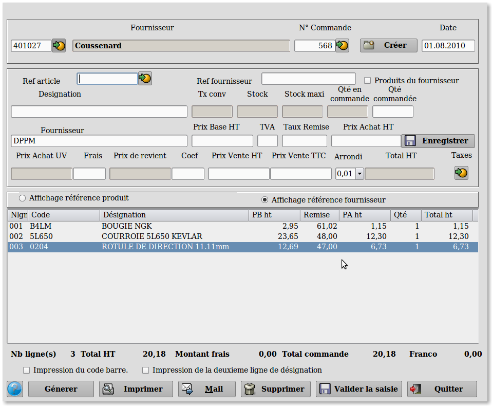

~ Facturation Laurux ~

~ Facturation Laurux ~ |
|
|
|
Commandes

A partir de cet écran vous pouvez créer, modifier, imprimer ou supprimer un bon de commande fournisseur.
Saisir en premier le code du
fournisseur
puis le numéro de la commande ( Le programme controle que ce numéro ne
soit pas déjà utilisé par le fournisseur saisi ). La date du jour est
proposée par défaut et peut etre modifiable.
Saisir vos produits en tapant leur code
ou bien en les sélectionnant a l'aide du bouton de recherche. Si le
produit n'existe pas dans la table ou bien s'il n'est pas stocké un
message d'alerte non bloquant vous préviendra. La quantité en stock et
la quantité déjà en commande apparaissent, le curseur se positionne sur
la zone 'Quantité à commandée',
saisir puis valider la quantité, le
curseur se positionne sur la zone 'Pbht'.
Si le prix est correct,
validez sinon modifiez le. Le 'Paht'
et le 'Total ht'
se recalculent et
le curseur vient dans la zone 'Remise'.
La zone "Ref
fournisseur"
n'est pas une zone de saisie mais une zone d'affichage. Lorsque vous
saisissez une réference produit, le programme affichera dans cette zone
la réference du fournisseur si elle existe.
Si vous cochez le bouton "Que les produits du fournisseur"
alors vous ne pourrez travailler qu'avec les réferences du fournisseur
saisit pour la commande. Si ce bouton n'est pas coché alors vous
pourrez travailler indifféremment avec n'importe qu'elle réference.
Le panel situé juste au dessus de la zone d'affichage des lignes de
produits saisis offre la possibilité d'afficher soit les réferences
produits soit les réferences fournisseurs. Par défaut c'est le bouton "Affichage référence fournisseur"
qui est actif.
Si le franco du fournisseur est renseigné la zone "Total commande" sera rouge puis passera au vert dès qu'elle dépassera le montant du Franco.
Lorsque votre saisie est terminée cliquez ou validez sur le bouton "Enregistrer".
Votre ligne de saisie
apparait maintenant
dans la partie basse de l'écran qui représente le corps de votre
commande. Le nombre de ligne saisies ainsi que le montant total de
votre commande sont également mis à jour lors de la validation du
produit.
En fin de saisie, enregistrez votre
travail en cliquant sur "Valider la
saisie".
Pour modifier un bon de commande
préalablement validé vous pourrez le rappeler à l'aide du bouton de
recherche situé à droite de la zone 'Numero
commande'.
Pour imprimer un bon de commande cliquez
sur le bouton "Imprimer".
Attention ! Lors de l'impression, le programme imprimera le code qui a
été sélectionné lors de la saisie. Ainsi, si le code "Affichage
référence fournisseur" est coché alors sur le bon de commande ce seront
les références fournisseur qui s'imprimeront et non les codes produits.
Pour supprimer un bon de commande
cliquez sur le bouton "Supprimer".
Pour générer une proposition de commande automatique ou une commande à partir d'un document client cliquez sur le bouton "Générer"
Pour envoyer la commande au format PDF chez le fournisseur cliquez sur le bouton "Mail". Cette fonction ne sera possible que si le bouton "Gestion des numéros de documents en copie" est activé dans les préférences (gestion1) et que le chemin de stockage est renseigné.
Rappel : Il faut effectuer un nettoyage du répertoire de stockage de temps en temps sous peine d'engorgement.
Note sur les quantités proposées par le programme.
-
En commande, les quantités proposées par le programme sont
calculées grâce à trois zones. Il en est de même lors des générations
automatiques des commandes.
Ex 1:
Lors de la commande si le stock du produit = 2, le stock mini = 5 et le
stock maxi = 10, le programme proposera une quantité à commander de 8
en saisie manuelle et, en cas de génération automatique, le produit
passera dans les propositions avec également une quantité égale à 8.
Ex 2:
Lors de la commande le stock du produit = 6, le stock mini = 5 et le
stock maxi = 10, le programme proposera une quantité à commander de 1
en saisie manuelle et, en cas de génération automatique, dans ce cas le
produit n'apparaitra pas dans les propositions.
Si
la zone "Minimum de commande" est renseignée dans la fiche article
alors, en
commande manuelle et en commande automatique, un contrôle
supplémentaire sera effectué avec cette quantité. Si la quantité saisie
ou calculée (pour une commande auto) est inférieure à la valeur
minimale de commande alors le programme proposera cette valeur.
Rappel : Pour modifier une ligne,
double-cliquez dessus pour la rendre accessible.
Rappel : Pour supprimer une ligne,
sélectionnez-la avec la souris puis pressez la touche "Suppr".
----------------------------------------------------------------------------------------------------------------------